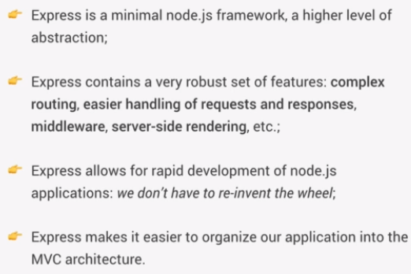

Express is a minimal node.js framework.
Many features included which allows you to write apps much faster.
Install Express
npm install express
Add to script.
const express = require('express');
Store the Express module in a variable named app.
const app = express();
Use the listen method to start a server.
This method takes in the args:
const express = require('express');
const app = express();
const port = 3000;
// pass in port and callback function
app.listen(port, () => {
console.log('App running');
});
Create a route for the default home URL.
Type app followed by the HTTP method to respond to. In this case, get().
get() takes the args:
Use the response Object to send back data.
You can set the status using the status() method and data to send using the send() method.
const express = require('express');
const app = express();
// Routing
app.get('/', (req, res) => {
res.status(200).send('Hello from the server');
});
const port = 3000;
app.listen(port, () => {
console.log('App running');
});
Open Postman and create a GET request to 127.0.0.1:3000/ to view the result.
Instead of using the send() method, use json() and send back an Object.
const express = require('express');
const app = express();
// Routing
app.get('/', (req, res) => {
res.status(200).json({ message: 'Hello from the server', app: 'Natours' });
});
const port = 3000;
app.listen(port, () => {
console.log('App running');
});